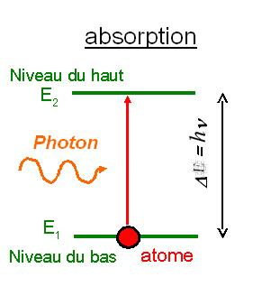
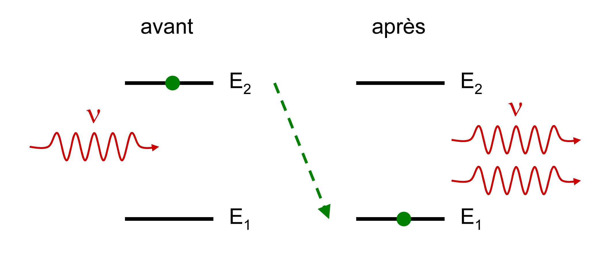
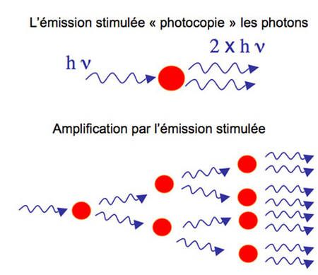
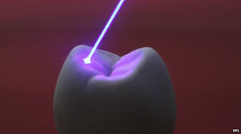

It is said that an atom is in its ground state if electrons are located on lower orbits (the closest to the nucleus). In this case the atom is in its idle state and has the lowest possible energy.
In an atom, in the ground state, if an electron escapes the attraction of the nucleus and goes to a higher orbit, then we say that the atom is in an excited state. It has a higher energy than the ground state.
An excited atom can spontaneously lose his excitement via a high orbit to a low orbit. In this case it loses energy by emitting a photon.

In an atom, an electron can also move from a low orbit to a higher orbit if given enough energy.

If an atom that is already in an excited state (on an upper electron orbit) receives a photon, the electron "pushed" by the incident photon releases a second photon exactly equal to the first and falls in its lower energy state. The excited atom plays the role of " photons photocopier." For a photon received it releases 2.

Now imagine that we use the two identical photons from the stimulated emission (see above) to
excite other atoms, then we get four photons in the same condition and so on by cascade effect: it is
the laser effect.
Readily be understood that in the laser effect, there has been amplification of light intensity and all the photons are in the same state, it is called coherent light. The same feature of this laser is coherent light where photons are all in the same state (direction, frequency, polarization, stage). Since the frequency of the light wave corresponding to a color (in the visible spectrum, is obtained a highly directional beam of a very pure single color. The color in question depends on the basic atom which is used as the emitted light frequency is a function of the distance between the two energy levels between which the electrons 'jump'.


The laser effect is based on the spontaneous emission. Imagine a material, the amplifying medium, where the atoms are mostly in an excited state. Sooner or later, an atom will emit a photon by spontaneous emission, and this photon will induce a cascade stimulated emission : the laser beam is born .
To ensure an emission in the selected direction, and increase the effect of the stimulated emission, the amplifying medium is placed between two mirrors so that the light makes many return before being transmitted: thanks to this cavity optical amplification gains in efficiency.

Laser applications are numerous. The laser has replaced many processes by improving them while
being less invasive. Here is a non exhaustive list:
The laser beam can indeed be so thin that it reaches only one cell. Therefore, it can be used in several applications in medicine.

One of the best known applications of laser in medicine is the treatment of myopia. Fast (five to ten minutes), painless, and ultimately the operation laser eye became an act common for doctors and almost miraculous solution for patients.

The laser is very useful in dermatology for the treatment of hemangioma, rosacea, age spots and scars.

The dental laser is now essential in the medical world. It presents real advantages over traditional techniques. The laser offers many advantages in dental surgery: precision, safety, absence of bleeding and postoperative pain, better healing.
In industry, lasers are used to their power and precision in tagging operations, welding, drilling or blasting. Unlike conventional tools, they have the advantage not to wear out.

Laser cutting is a manufacturing process that uses a laser to cut the material (metal, wood) due to the large amount of energy concentrated on a very small surface.

Accurate and fast, laser drilling allows obtaining small holes of varying geometries, for applications as glass on metal or plastic.
A laser beam which energy is concentrated on a very small surface destroys the material by burning. The depth obtained by removing the material creates the etching. Even with low-power lasers, a beam focus on a very small area allows local destruction by spraying. This marking method is very accurate, it allows the engraving of photos or complex designs on all types of materials.

Laser designator: laser source for guiding a projectile (missile) or facilitating the target with a laser pointing on small arms.
The optical fibers are made of a transparent material, glass or plastic, and have the ability to conduct light in the manner of a pipe conducting the water. The same light comes out of an optical fiber than the one which has been put into it. The optical fiber refers to a technique and a technology for transmitting information over computer networks. The optical fiber is spreading as an Internet access because it allows very high-speed downloads.

The CD is done using a laser spot infrared.